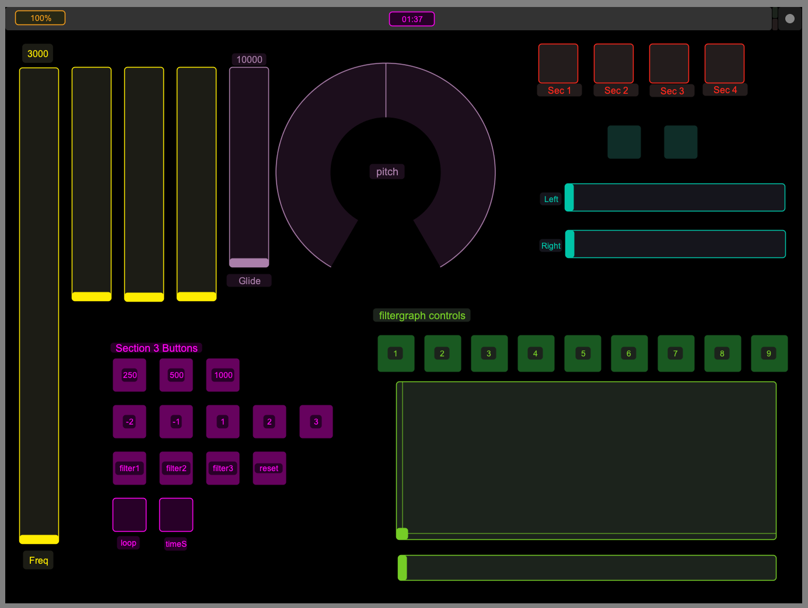

The surrealist practice of recontextualizing the familiar is
both playful and thought provoking. I have only experienced this
type of recontextualization in visual work, such as in the work
of Rene Magritte. I was drawn to the idea of creating a similar
experience with sound.
The Bare Conductive Touch Board turns anything into an audio
trigger. Objects can be used to play sounds that are not
normally associated the object, creating a ludic association. In
the early stages of experimenting with the board, I used an
apple to trigger a cat sound. The concept for Play with Your
Food slowly took shape from there, eventually becoming a
performance using fruits and vegetables to trigger their names
and the names of several items which were not present.
The performance was separated into four sections. The first
section began with the produce triggering the correct names. For
example, pressing the onion triggered the word “onion” to play.
After 20 seconds, the audio triggered was not correct and
pressing the onion triggered the word “asparagus”. The second
section randomly played the first syllable of a word and the
last syllable of another word to create new words or new
vegetables such as “eggroom” or “mushplant”. The third section
played with the word Beetroot - separating the phonemes and
mixing them up to create a type of music.
The forth section presented the title of the piece, first by
randomly playing the words “food”, “your”, “with”, and “play”
and then the correctly constructed sentence “play with you
food”. Playing with food in this case is closer to playing an
instrument and reinforces the ludic quality of the performance.
Besides the Bare Conductive Touch Board, I used OSC to control
filters and effects to elevate the level of play. One of the
major benefits of the Touch OSC app is that Hexler also has a
free Touch OSC editor to enable custom tailored interfaces.
Faders can be made to fit a custom range such as my frequency
slider which ranges from 0 to 3000 and my rotary dial for pitch
which ranged from -2400 to 2400.
This was my first performance of this type and besides being a
bit anxious, I enjoyed it. I hope to be able to perform this
piece and others again in the future.

Customized Touch OSC interface design